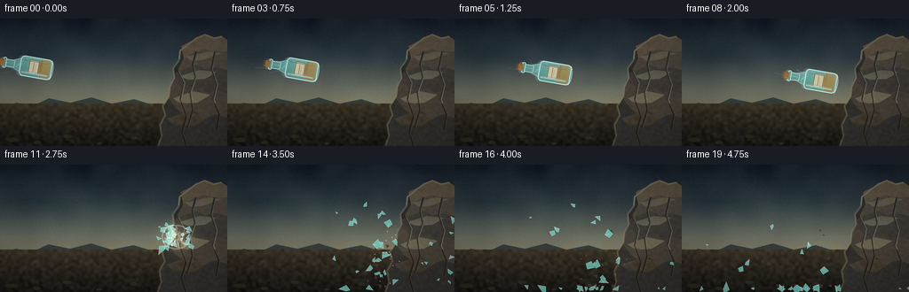
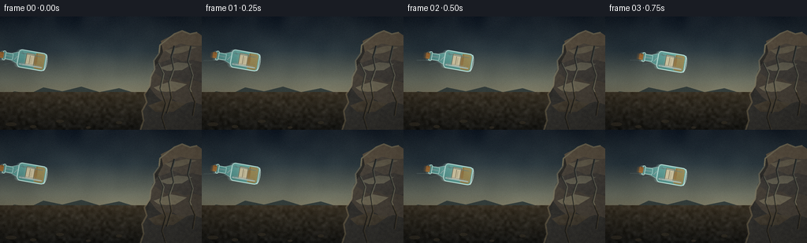
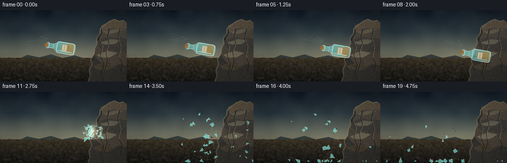
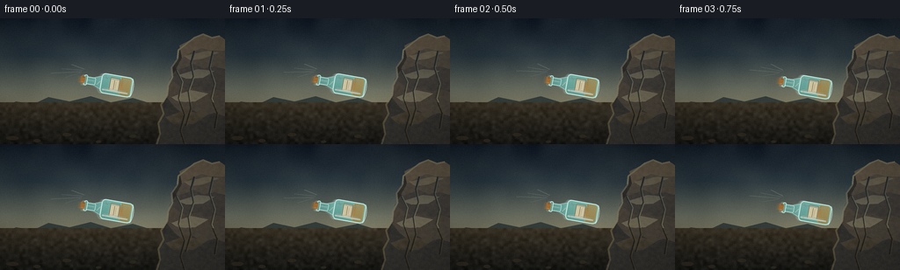

CODING AGENTS AS PIXEL WORLD MODELS
traex/DeepSeek-V4.1-Flash · phygen_133
点击播放 · 原生 RGB 像素
逐轮保存的候选
回放视频、检查图与代码变化。
每份候选均可单独播放。实际图片检查记录在下方工具轨迹中。
候选 01播放与检查图
点击播放 · 原生 RGB 像素

展开代码变化
--- 上一保存版本
+++ 本次保存版本
@@ -0,0 +1,698 @@
+"""Procedural renderer for a glass bottle colliding with a rock face."""
+
+from __future__ import annotations
+
+import json
+from pathlib import Path
+
+import numpy as np
+from PIL import Image, ImageDraw, ImageFilter
+
+import artifact_io
+
+
+CASE_DIR = Path(__file__).resolve().parent
+SPEC = json.loads((CASE_DIR / "task_spec.json").read_text())
+W = int(SPEC["width"])
+H = int(SPEC["height"])
+N = int(SPEC["frames"])
+FPS = float(SPEC["fps"])
+
+SS = 4
+RW = W * SS
+RH = H * SS
+IMPACT_FRAME = 10
+IMPACT_TIME = IMPACT_FRAME / FPS
+IMPACT = np.array([199.0, 82.0])
+BOTTLE_START = np.array([31.0, 54.0])
+BOTTLE_AT_IMPACT = np.array([176.0, 78.0])
+
+
+def scaled(points):
+ return [(float(x) * SS, float(y) * SS) for x, y in points]
+
+
+def lerp_color(a, b, t):
+ return tuple(int(round(a[i] + (b[i] - a[i]) * t)) for i in range(3))
+
+
+def vertical_gradient(size, stops):
+ """Build an RGB gradient from (position, color) stops."""
+ width, height = size
+ y = np.linspace(0.0, 1.0, height)
+ colors = np.zeros((height, 3), dtype=np.float32)
+ for i in range(len(stops) - 1):
+ p0, c0 = stops[i]
+ p1, c1 = stops[i + 1]
+ select = (y >= p0) & (y <= p1)
+ local = (y[select] - p0) / max(p1 - p0, 1e-6)
+ c0 = np.array(c0, dtype=np.float32)
+ c1 = np.array(c1, dtype=np.float32)
+ colors[select] = c0 + (c1 - c0) * local[:, None]
+ colors[: int(stops[0][0] * height)] = stops[0][1]
+ colors[int(stops[-1][0] * height) :] = stops[-1][1]
+ return np.repeat(colors[:, None, :], width, axis=1)
+
+
+def noise_field(rng, size, cells, blur=0.0):
+ width, height = size
+ small = rng.normal(0.0, 1.0, (cells[1], cells[0])).astype(np.float32)
+ image = Image.fromarray(small).resize((width, height), Image.Resampling.BICUBIC)
+ field = np.asarray(image, dtype=np.float32)
+ if blur:
+ radius = max(1, int(round(blur)))
+ padded = np.pad(field, ((radius, radius), (radius, radius)), mode="edge")
+ integral = np.pad(padded.cumsum(0).cumsum(1), ((1, 0), (1, 0)))
+ diameter = 2 * radius + 1
+ field = (
+ integral[diameter:, diameter:]
+ - integral[:-diameter, diameter:]
+ - integral[diameter:, :-diameter]
+ + integral[:-diameter, :-diameter]
+ ) / float(diameter * diameter)
+ return field
+
+
+def make_background(rng):
+ sky = vertical_gradient(
+ (RW, RH),
+ [
+ (0.00, (18, 27, 39)),
+ (0.30, (38, 51, 61)),
+ (0.57, (91, 97, 91)),
+ (0.79, (122, 116, 96)),
+ (1.00, (48, 44, 37)),
+ ],
+ )
+
+ cloud = noise_field(rng, (RW, RH), (22, 12), blur=14.0 * SS)
+ cloud = np.clip(cloud, -1.4, 1.8)
+ sky += cloud[:, :, None] * np.array([7.0, 7.0, 6.0], dtype=np.float32)
+
+ horizon_glow = np.zeros((RH, RW), dtype=np.float32)
+ yy, xx = np.mgrid[0:RH, 0:RW]
+ glow_r = 360.0 * SS
+ horizon_glow = np.exp(
+ -(((xx - 214 * SS) / glow_r) ** 2 + ((yy - 105 * SS) / (150 * SS)) ** 2)
+ )
+ sky += horizon_glow[:, :, None] * np.array([19.0, 16.0, 10.0], dtype=np.float32)
+
+ base = Image.fromarray(np.clip(sky, 0, 255).astype(np.uint8), "RGB")
+ draw = ImageDraw.Draw(base, "RGBA")
+
+ # Hazy, distant landforms keep the rock outcrop as the dominant mass.
+ draw.polygon(
+ scaled(
+ [
+ (0, 103),
+ (18, 95),
+ (38, 98),
+ (55, 90),
+ (79, 95),
+ (103, 89),
+ (126, 96),
+ (151, 91),
+ (177, 99),
+ (201, 94),
+ (228, 99),
+ (256, 94),
+ (256, 125),
+ (0, 125),
+ ]
+ ),
+ fill=(49, 58, 58, 225),
+ )
+ draw.polygon(
+ scaled(
+ [
+ (0, 111),
+ (26, 106),
+ (48, 108),
+ (72, 102),
+ (101, 107),
+ (128, 103),
+ (155, 109),
+ (182, 105),
+ (205, 111),
+ (229, 106),
+ (256, 110),
+ (256, 130),
+ (0, 130),
+ ]
+ ),
+ fill=(42, 48, 46, 235),
+ )
+
+ # Foreground floor with a warm, dusty edge.
+ ground = vertical_gradient(
+ (RW, int(48 * SS)),
+ [(0.0, (65, 58, 47)), (0.30, (53, 49, 41)), (1.0, (31, 31, 29))],
+ )
+ ground_image = Image.fromarray(ground.astype(np.uint8), "RGB")
+ base.paste(ground_image, (0, 96 * SS))
+ draw = ImageDraw.Draw(base, "RGBA")
+
+ ground_noise = noise_field(rng, (RW, 48 * SS), (80, 16), blur=1.0 * SS)
+ ground_patch = np.asarray(base.crop((0, 96 * SS, RW, RH))).astype(np.float32)
+ ground_patch += ground_noise[:, :, None] * 5.0
+ base.paste(
+ Image.fromarray(np.clip(ground_patch, 0, 255).astype(np.uint8), "RGB"),
+ (0, 96 * SS),
+ )
+ draw = ImageDraw.Draw(base, "RGBA")
+
+ # A few low-contrast pebbles anchor the rock in the foreground.
+ for x, y, rx, ry in [
+ (14, 137, 7, 2.4),
+ (42, 140, 4, 1.8),
+ (76, 133, 5, 2.0),
+ (112, 141, 3, 1.5),
+ (151, 135, 4, 1.8),
+ (184, 139, 6, 2.2),
+ (221, 136, 5, 2.0),
+ ]:
+ shade = (55, 51, 43, 210)
+ draw.ellipse(
+ scaled([(x - rx, y - ry), (x + rx, y + ry)]),
+ fill=shade,
+ )
+ return base
+
+
+def make_rock(rng):
+ rock = Image.new("RGBA", (RW, RH), (0, 0, 0, 0))
+ draw = ImageDraw.Draw(rock, "RGBA")
+ silhouette = [
+ (178, 144),
+ (182, 132),
+ (180, 120),
+ (186, 109),
+ (183, 99),
+ (190, 88),
+ (191, 77),
+ (196, 67),
+ (195, 56),
+ (202, 46),
+ (203, 36),
+ (212, 29),
+ (221, 22),
+ (231, 18),
+ (241, 22),
+ (250, 20),
+ (256, 24),
+ (256, 144),
+ ]
+ draw.polygon(scaled(silhouette), fill=(43, 43, 42, 255))
+
+ facets = [
+ (
+ [(204, 31), (220, 23), (231, 18), (242, 22), (250, 20), (256, 24), (256, 37), (241, 37), (229, 34), (217, 39), (207, 45)],
+ (91, 82, 70),
+ ),
+ (
+ [(207, 45), (217, 39), (229, 34), (241, 37), (256, 37), (256, 58), (244, 55), (232, 57), (220, 52), (211, 56), (199, 60)],
+ (75, 70, 64),
+ ),
+ (
+ [(199, 60), (211, 56), (220, 52), (232, 57), (244, 55), (256, 58), (256, 84), (245, 81), (234, 84), (222, 78), (211, 81), (201, 75), (193, 70)],
+ (61, 59, 57),
+ ),
+ (
+ [(193, 70), (201, 75), (211, 81), (222, 78), (234, 84), (245, 81), (256, 84), (256, 112), (243, 108), (231, 112), (219, 105), (208, 109), (198, 101), (190, 91)],
+ (70, 65, 59),
+ ),
+ (
+ [(190, 91), (198, 101), (208, 109), (219, 105), (231, 112), (243, 108), (256, 112), (256, 144), (182, 144), (182, 132), (180, 120), (186, 109)],
+ (48, 48, 47),
+ ),
+ ]
+ for points, color in facets:
+ draw.polygon(scaled(points), fill=(*color, 255))
+
+ # Broken planes and ledges catch the low warm light.
+ ledges = [
+ ([(209, 43), (236, 37), (249, 39), (231, 46), (217, 48)], (126, 111, 87, 160)),
+ ([(202, 65), (225, 58), (244, 60), (231, 68), (212, 69)], (111, 101, 84, 135)),
+ ([(195, 90), (217, 82), (237, 86), (222, 95), (203, 96)], (104, 93, 77, 120)),
+ ([(188, 113), (211, 105), (235, 111), (220, 121), (197, 121)], (91, 82, 70, 100)),
+ ]
+ for points, color in ledges:
+ draw.polygon(scaled(points), fill=color)
+
+ # Dark seams and a bright, weathered left contour.
+ seams = [
+ ([(221, 37), (217, 51), (220, 66), (214, 83), (217, 103), (211, 123)]),
+ ([(242, 37), (238, 56), (244, 74), (240, 91), (247, 108), (244, 126)]),
+ ([(200, 58), (207, 72), (203, 91), (210, 110), (205, 128), (210, 144)]),
+ ]
+ for seam in seams:
+ draw.line(scaled(seam), fill=(26, 27, 27, 175), width=2 * SS, joint="curve")
+ shifted = [(x + 1.0, y + 0.7) for x, y in seam]
+ draw.line(scaled(shifted), fill=(130, 117, 93, 70), width=1 * SS, joint="curve")
+
+ outline = [
+ (202, 46),
+ (203, 36),
+ (212, 29),
+ (221, 22),
+ (231, 18),
+ (241, 22),
+ (250, 20),
+ ]
+ draw.line(scaled(outline), fill=(164, 148, 113, 145), width=2 * SS, joint="curve")
+ left_edge = [
+ (202, 46),
+ (195, 56),
+ (196, 67),
+ (191, 77),
+ (190, 88),
+ (183, 99),
+ (186, 109),
+ (180, 120),
+ (182, 132),
+ (178, 144),
+ ]
+ draw.line(scaled(left_edge), fill=(135, 124, 101, 110), width=2 * SS, joint="curve")
+
+ # Clip granular surface texture to the rock silhouette.
+ mask = Image.new("L", (RW, RH), 0)
+ mask_draw = ImageDraw.Draw(mask)
+ mask_draw.polygon(scaled(silhouette), fill=255)
+ texture = noise_field(rng, (RW, RH), (100, 70), blur=1.0 * SS)
+ tex_rgb = np.zeros((RH, RW, 4), dtype=np.uint8)
+ grain = np.clip(texture * 15.0, -22, 22)
+ tex_rgb[:, :, 0] = np.clip(91 + grain, 0, 255)
+ tex_rgb[:, :, 1] = np.clip(85 + grain, 0, 255)
+ tex_rgb[:, :, 2] = np.clip(73 + grain * 0.8, 0, 255)
+ tex_rgb[:, :, 3] = 42
+ tex = Image.fromarray(tex_rgb, "RGBA")
+ tex.putalpha(Image.fromarray((np.asarray(mask) * 0.16).astype(np.uint8)))
+ rock = Image.alpha_composite(rock, tex)
+ return rock
+
+
+def tint_alpha(layer, opacity):
+ result = layer.copy()
+ alpha = np.asarray(result.getchannel("A"), dtype=np.float32)
+ result.putalpha(Image.fromarray(np.clip(alpha * opacity, 0, 255).astype(np.uint8)))
+ return result
+
+
+def make_bottle():
+ layer = Image.new("RGBA", (180, 300), (0, 0, 0, 0))
+ mask = Image.new("L", layer.size, 0)
+ md = ImageDraw.Draw(mask)
+ md.rounded_rectangle((44, 116, 136, 260), radius=18, fill=255)
+ md.polygon([(74, 82), (106, 82), (122, 121), (58, 121)], fill=255)
+ md.rounded_rectangle((73, 48, 107, 91), radius=7, fill=255)
+ md.rounded_rectangle((66, 38, 114, 53), radius=6, fill=255)
+
+ # A subtle cool-to-warm glass body, strongest at the left edge.
+ yy, xx = np.mgrid[0:300, 0:180]
+ body_alpha = np.asarray(mask, dtype=np.float32) / 255.0
+ body_alpha *= 0.48 + 0.17 * np.clip((xx - 45) / 90.0, 0, 1)
+ rgba = np.zeros((300, 180, 4), dtype=np.uint8)
+ rgba[:, :, 0] = np.clip(72 + 0.40 * xx + 0.05 * yy, 0, 255)
+ rgba[:, :, 1] = np.clip(154 + 0.24 * xx + 0.08 * yy, 0, 255)
+ rgba[:, :, 2] = np.clip(150 + 0.21 * xx + 0.07 * yy, 0, 255)
+ rgba[:, :, 3] = np.clip(body_alpha * 255, 0, 255)
+ layer = Image.fromarray(rgba, "RGBA")
+ draw = ImageDraw.Draw(layer, "RGBA")
+
+ # Amber liquid in the lower third gives the glass depth and readable color.
+ liquid_mask = Image.new("L", layer.size, 0)
+ ld = ImageDraw.Draw(liquid_mask)
+ ld.rounded_rectangle((50, 206, 130, 252), radius=12, fill=255)
+ liquid_mask = Image.composite(liquid_mask, Image.new("L", layer.size, 0), mask)
+ liquid_rgba = np.zeros((300, 180, 4), dtype=np.uint8)
+ liquid_rgba[:, :, 0] = 179
+ liquid_rgba[:, :, 1] = 116
+ liquid_rgba[:, :, 2] = 48
+ liquid_rgba[:, :, 3] = np.asarray(liquid_mask) * 0.52
+ layer = Image.alpha_composite(layer, Image.fromarray(liquid_rgba, "RGBA"))
+ draw = ImageDraw.Draw(layer, "RGBA")
+ draw.ellipse((50, 201, 130, 215), fill=(209, 152, 74, 95))
+ draw.arc((50, 201, 130, 215), 184, 356, fill=(248, 203, 127, 120), width=2)
+
+ # Paper label and a restrained glass rim.
+ draw.rounded_rectangle((58, 157, 122, 200), radius=3, fill=(210, 201, 171, 218))
+ draw.rounded_rectangle((58, 157, 122, 200), radius=3, outline=(86, 77, 59, 210), width=2)
+ draw.line((68, 176, 111, 176), fill=(101, 88, 65, 185), width=2)
+ draw.line((74, 184, 104, 184), fill=(125, 111, 82, 145), width=1)
+
+ # Neck, shoulder, lip, and cork.
+ draw.rounded_rectangle((73, 48, 107, 91), radius=7, outline=(195, 235, 226, 205), width=3)
+ draw.rounded_rectangle((66, 38, 114, 53), radius=6, fill=(114, 181, 172, 115), outline=(211, 242, 231, 225), width=3)
+ draw.rounded_rectangle((75, 23, 105, 42), radius=4, fill=(151, 108, 63, 255))
+ draw.line((79, 28, 79, 38), fill=(207, 161, 102, 160), width=2)
+ draw.line((101, 28, 101, 38), fill=(88, 61, 38, 190), width=2)
+ draw.line((60, 115, 121, 115), fill=(224, 248, 239, 170), width=2)
+
+ # Long specular strokes and small reflected highlights make the bottle read as glass.
+ draw.line((61, 127, 61, 244), fill=(228, 255, 249, 112), width=7)
+ draw.line((68, 132, 68, 235), fill=(248, 255, 252, 75), width=2)
+ draw.line((117, 128, 115, 240), fill=(196, 238, 230, 64), width=3)
+ draw.line((77, 98, 96, 112), fill=(241, 255, 251, 105), width=3)
+ draw.line((91, 54, 91, 84), fill=(234, 255, 250, 92), width=3)
+ draw.line((53, 147, 70, 132), fill=(241, 255, 252, 58), width=2)
+ draw.line((111, 143, 126, 132), fill=(236, 255, 250, 44), width=2)
+
+ # Body outline and base thickness.
+ draw.rounded_rectangle((44, 116, 136, 260), radius=18, outline=(209, 244, 236, 205), width=4)
+ draw.arc((46, 240, 134, 266), 8, 172, fill=(223, 250, 242, 180), width=3)
+ draw.line((74, 82, 58, 121), fill=(209, 244, 236, 160), width=2)
+ draw.line((106, 82, 122, 121), fill=(209, 244, 236, 150), width=2)
+ return layer
+
+
+def bottle_position(frame_index):
+ t = frame_index / FPS
+ u = np.clip(t / IMPACT_TIME, 0.0, 1.0)
+ center = BOTTLE_START + (BOTTLE_AT_IMPACT - BOTTLE_START) * u
+ center[1] = BOTTLE_START[1] + 24.0 * (u**2)
+ return center
+
+
+def paste_bottle(base, bottle_layer, center, angle, opacity=1.0):
+ rotated = bottle_layer.rotate(
+ angle,
+ resample=Image.Resampling.BICUBIC,
+ expand=True,
+ )
+ if opacity < 1.0:
+ rotated = tint_alpha(rotated, opacity)
+ x = int(round(center[0] * SS - rotated.width / 2))
+ y = int(round(center[1] * SS - rotated.height / 2))
+ base.alpha_composite(rotated, (x, y))
+
+
+def draw_flight(base, bottle_layer, frame_index):
+ center = bottle_position(frame_index)
+ previous = bottle_position(max(0, frame_index - 1))
+ direction = center - previous
+ norm = np.linalg.norm(direction)
+ if norm < 0.01:
+ direction = np.array([1.0, 0.0])
+ else:
+ direction /= norm
+
+ # Restrained speed streaks sit behind the bottle.
+ streak_layer = Image.new("RGBA", (RW, RH), (0, 0, 0, 0))
+ sd = ImageDraw.Draw(streak_layer, "RGBA")
+ for k, length in enumerate((20, 31, 43, 27)):
+ offset = (k - 1.5) * 5.0
+ start = center - direction * length
+ start += np.array([-direction[1], direction[0]]) * offset
+ end = center - direction * (5.5 + k * 1.5)
+ end += np.array([-direction[1], direction[0]]) * offset * 0.3
+ alpha = 38 - k * 5
+ sd.line(
+ scaled([tuple(start), tuple(end)]),
+ fill=(207, 235, 226, alpha),
+ width=max(1, SS - k % 2),
+ )
+ base.alpha_composite(streak_layer)
+
+ # Ghosted samples along the trajectory create motion blur without muddying the bottle.
+ for lag, opacity in ((3.4, 0.12), (2.2, 0.18), (1.1, 0.28)):
+ ghost = center - direction * lag
+ paste_bottle(base, bottle_layer, ghost, 80.0, opacity)
+ paste_bottle(base, bottle_layer, center, 80.0, 1.0)
+ return center
+
+
+def make_shards(rng):
+ shards = []
+ count = 34
+ for index in range(count):
+ if index < 24:
+ angle = rng.uniform(np.deg2rad(112), np.deg2rad(248))
+ else:
+ angle = rng.uniform(np.deg2rad(-54), np.deg2rad(38))
+ speed = rng.uniform(15.0, 76.0)
+ if index < 8:
+ speed *= 1.25
+ size = rng.uniform(1.7, 6.6)
+ if index < 5:
+ size *= 1.5
+ shards.append(
+ {
+ "angle": angle,
+ "speed": speed,
+ "size": size,
+ "spin": rng.uniform(-9.0, 9.0),
+ "phase": rng.uniform(0.0, 2.0 * np.pi),
+ "kind": index % 3,
+ }
+ )
+ chips = []
+ for _ in range(18):
+ chips.append(
+ {
+ "angle": rng.uniform(np.deg2rad(118), np.deg2rad(260)),
+ "speed": rng.uniform(10.0, 54.0),
+ "size": rng.uniform(0.9, 3.4),
+ "spin": rng.uniform(-12.0, 12.0),
+ }
+ )
+ dust = []
+ for _ in range(58):
+ dust.append(
+ {
+ "angle": rng.uniform(np.deg2rad(125), np.deg2rad(245)),
+ "speed": rng.uniform(4.0, 28.0),
+ "radius": rng.uniform(2.0, 9.0),
+ "phase": rng.uniform(0.0, 2.0 * np.pi),
+ }
+ )
+ return shards, chips, dust
+
+
+SHARDS, CHIPS, DUST = make_shards(np.random.default_rng(133))
+
+
+def shard_points(center, angle, size, kind, phase):
+ if kind == 0:
+ pts = np.array([(-0.9, -0.45), (0.9, -0.15), (0.1, 0.85)])
+ elif kind == 1:
+ pts = np.array([(-0.75, -0.7), (0.8, -0.05), (0.15, 0.65), (-0.5, 0.25)])
+ else:
+ pts = np.array([(-0.65, -0.25), (0.55, -0.8), (0.8, 0.5), (-0.25, 0.7)])
+ pts = pts * size
+ pts[:, 0] *= 0.72 + 0.28 * np.sin(phase)
+ c, s = np.cos(angle), np.sin(angle)
+ rotation = np.array([[c, -s], [s, c]])
+ return pts @ rotation.T + center
+
+
+def draw_dust(base, age):
+ if age <= 0:
+ return
+ fade = np.clip(1.0 - age / 2.45, 0.0, 1.0)
+ dust_layer = Image.new("RGBA", (RW, RH), (0, 0, 0, 0))
+ dd = ImageDraw.Draw(dust_layer, "RGBA")
+ for particle in DUST:
+ t = age
+ travel = particle["speed"] * (1.0 - np.exp(-t * 1.6)) / 1.6
+ x = IMPACT[0] + np.cos(particle["angle"]) * travel
+ y = IMPACT[1] + np.sin(particle["angle"]) * travel + 7.0 * t * t
+ radius = particle["radius"] * (0.5 + 1.8 * (1.0 - np.exp(-t * 1.4)))
+ radius += 0.8 * np.sin(particle["phase"] + t * 4.0)
+ alpha = int(42 * fade)
+ dd.ellipse(
+ scaled([(x - radius, y - radius * 0.65), (x + radius, y + radius * 0.65)]),
+ fill=(132, 121, 103, alpha),
+ )
+ dust_layer = dust_layer.filter(ImageFilter.GaussianBlur(3.0 * SS))
+ base.alpha_composite(dust_layer)
+
+
+def draw_debris(base, age):
+ if age <= 0:
+ return
+ t = age
+ debris_layer = Image.new("RGBA", (RW, RH), (0, 0, 0, 0))
+ draw = ImageDraw.Draw(debris_layer, "RGBA")
+
+ # Rock chips are darker and heavier than the glass shards.
+ for chip in CHIPS:
+ x = IMPACT[0] + np.cos(chip["angle"]) * chip["speed"] * t
+ y = IMPACT[1] + np.sin(chip["angle"]) * chip["speed"] * t + 20.0 * t * t
+ if y > 137.0:
+ y = 137.0
+ angle = chip["spin"] * t
+ pts = shard_points(np.array([x, y]), angle, chip["size"], 0, 0.0)
+ draw.polygon(scaled([tuple(p) for p in pts]), fill=(63, 58, 50, 235), outline=(104, 93, 77, 210))
+
+ # Glass fragments: cool fills, hot specular edges.
+ for shard in SHARDS:
+ x = IMPACT[0] + np.cos(shard["angle"]) * shard["speed"] * t
+ y = IMPACT[1] + np.sin(shard["angle"]) * shard["speed"] * t + 25.0 * t * t
+ if y > 140.0:
+ y = 140.0
+ angle = shard["phase"] + shard["spin"] * t
+ pts = shard_points(np.array([x, y]), angle, shard["size"], shard["kind"], shard["phase"])
+ glass = (120, 209, 199, 190)
+ edge = (222, 255, 248, 235)
+ draw.polygon(scaled([tuple(p) for p in pts]), fill=glass, outline=edge)
+ if shard["size"] > 5.0:
+ center = pts.mean(axis=0)
+ draw.line(
+ scaled([tuple(pts[0]), tuple(center)]),
+ fill=(238, 255, 251, 140),
+ width=max(1, SS),
+ )
+
+ # A handful of tiny glints continue to catch the light.
+ rng = np.random.default_rng(900 + int(round(age * 40)))
+ for _ in range(16):
+ theta = rng.uniform(np.deg2rad(105), np.deg2rad(255))
+ speed = rng.uniform(8, 44)
+ x = IMPACT[0] + np.cos(theta) * speed * t
+ y = IMPACT[1] + np.sin(theta) * speed * t + 18.0 * t * t
+ alpha = int(np.clip(230 * (1.0 - age / 1.9), 0, 230))
+ draw.ellipse(
+ scaled([(x - 0.6, y - 0.6), (x + 0.6, y + 0.6)]),
+ fill=(242, 255, 251, alpha),
+ )
+ base.alpha_composite(debris_layer)
+
+
+def draw_impact(base, frame_index):
+ age = max(0.0, (frame_index - IMPACT_FRAME) / FPS)
+ if frame_index == IMPACT_FRAME:
+ # Hairline rock fractures appear exactly where the bottle tip lands.
+ crack_layer = Image.new("RGBA", (RW, RH), (0, 0, 0, 0))
+ cd = ImageDraw.Draw(crack_layer, "RGBA")
+ branches = [
+ (IMPACT, (IMPACT[0] + 8, IMPACT[1] + 5)),
+ (IMPACT, (IMPACT[0] + 4, IMPACT[1] + 15)),
+ (IMPACT, (IMPACT[0] - 1, IMPACT[1] + 22)),
+ (IMPACT, (IMPACT[0] + 14, IMPACT[1] - 2)),
+ (IMPACT, (IMPACT[0] + 10, IMPACT[1] + 13)),
+ ]
+ for start, end in branches:
+ cd.line(scaled([tuple(start), tuple(end)]), fill=(26, 26, 24, 195), width=2 * SS)
+ cd.line(
+ scaled([(start[0] + 0.7, start[1] + 0.7), (end[0] + 0.7, end[1] + 0.7)]),
+ fill=(196, 181, 147, 75),
+ width=SS,
+ )
+ base.alpha_composite(crack_layer)
+ draw_debris(base, 0.04)
+ elif age > 0:
+ draw_dust(base, age)
+ draw_debris(base, age)
+
+ # Expanding shock ring and radial impact flare.
+ effect = Image.new("RGBA", (RW, RH), (0, 0, 0, 0))
+ ed = ImageDraw.Draw(effect, "RGBA")
+ radius = 5.0 + 19.0 * (1.0 - np.exp(-age * 3.6))
+ ring_alpha = int(150 * np.exp(-age * 2.8))
+ ed.ellipse(
+ scaled(
+ [
+ (IMPACT[0] - radius, IMPACT[1] - radius * 0.85),
+ (IMPACT[0] + radius, IMPACT[1] + radius * 0.85),
+ ]
+ ),
+ outline=(241, 248, 226, ring_alpha),
+ width=max(1, int(2.0 * SS * np.exp(-age))),
+ )
+ if age < 0.8:
+ flare_alpha = int(210 * np.exp(-age * 5.0))
+ for k in range(11):
+ theta = 2.0 * np.pi * k / 11.0 + 0.17
+ inner = 2.5
+ outer = 7.5 + 8.0 * np.sin(k * 2.1) ** 2
+ start = IMPACT + np.array([np.cos(theta), np.sin(theta)]) * inner
+ end = IMPACT + np.array([np.cos(theta), np.sin(theta)]) * outer
+ ed.line(
+ scaled([tuple(start), tuple(end)]),
+ fill=(255, 246, 208, flare_alpha),
+ width=max(SS, int(2.4 * SS)),
+ )
+ base.alpha_composite(effect)
+
+
+def add_glow(image, frame_index):
+ if frame_index < IMPACT_FRAME:
+ return image
+ age = max(0.0, (frame_index - IMPACT_FRAME) / FPS)
+ if frame_index == IMPACT_FRAME:
+ strength = 0.18
+ radius = 17.0
+ else:
+ strength = 0.52 * np.exp(-age * 4.1)
+ radius = 13.0 + 9.0 * age
+ yy, xx = np.mgrid[0:RH, 0:RW]
+ dist2 = ((xx - IMPACT[0] * SS) ** 2 + (yy - IMPACT[1] * SS) ** 2) / (radius * SS) ** 2
+ glow = np.exp(-dist2).astype(np.float32)
+ arr = np.asarray(image, dtype=np.float32)
+ warm = np.array([255.0, 235.0, 187.0], dtype=np.float32)
+ arr = arr + glow[:, :, None] * warm * strength
+ return Image.fromarray(np.clip(arr, 0, 255).astype(np.uint8), "RGB")
+
+
+def color_grade(frame, frame_index):
+ arr = np.asarray(frame, dtype=np.float32)
+ arr = (arr - 128.0) * 1.075 + 128.0
+ luma = arr @ np.array([0.2126, 0.7152, 0.0722], dtype=np.float32)
+ arr = luma[:, :, None] + (arr - luma[:, :, None]) * 1.12
+
+ yy, xx = np.mgrid[0:H, 0:W]
+ nx = (xx - W * 0.5) / (W * 0.5)
+ ny = (yy - H * 0.5) / (H * 0.5)
+ vignette = np.clip(1.0 - 0.19 * (nx * nx * 0.7 + ny * ny * 0.55), 0.72, 1.0)
+ arr *= vignette[:, :, None]
+
+ # Very fine per-frame grain avoids banding in the low-resolution gradients.
+ rng = np.random.default_rng(4400 + frame_index)
+ grain = rng.normal(0.0, 1.15, (H, W, 1)).astype(np.float32)
+ arr += grain
+ return np.clip(arr, 0, 255).astype(np.uint8)
+
+
+def render():
+ rng = np.random.default_rng(1337)
+ background_rgb = make_background(rng)
+ rock = make_rock(rng)
+ bottle = make_bottle()
+ frames = []
+
+ for frame_index in range(N):
+ base = background_rgb.convert("RGBA")
+ base.alpha_composite(rock)
+ if frame_index <= IMPACT_FRAME:
+ draw_flight(base, bottle, frame_index)
+ draw_impact(base, frame_index)
+ base_rgb = base.convert("RGB")
+ base_rgb = add_glow(base_rgb, frame_index)
+
+ # A one-pixel camera kick on the two strongest impact frames adds force.
+ if frame_index in (11, 12):
+ arr = np.asarray(base_rgb)
+ shift = 2 if frame_index == 11 else -1
+ shifted = np.empty_like(arr)
+ if shift > 0:
+ shifted[:, :-shift] = arr[:, shift:]
+ shifted[:, -shift:] = arr[:, -1:]
+ else:
+ shifted[:, -shift:] = arr[:, :shift]
+ shifted[:, : -shift] = arr[:, :1]
+ base_rgb = Image.fromarray(shifted, "RGB")
+
+ final = base_rgb.resize((W, H), Image.Resampling.LANCZOS)
+ frames.append(color_grade(final, frame_index))
+
+ return np.stack(frames, axis=0)
+
+
+def main():
+ frames = render()
+ artifact_io.save(frames, CASE_DIR)
+ print(f"Wrote {len(frames)} frames to {CASE_DIR}")
+
+
+if __name__ == "__main__":
+ main()
候选 02播放与检查图
点击播放 · 原生 RGB 像素


展开代码变化
--- 上一保存版本
+++ 本次保存版本
@@ -23,9 +23,9 @@
RH = H * SS
IMPACT_FRAME = 10
IMPACT_TIME = IMPACT_FRAME / FPS
-IMPACT = np.array([199.0, 82.0])
-BOTTLE_START = np.array([31.0, 54.0])
-BOTTLE_AT_IMPACT = np.array([176.0, 78.0])
+IMPACT = np.array([190.0, 82.0])
+BOTTLE_START = np.array([101.0, 60.0])
+BOTTLE_AT_IMPACT = IMPACT.copy()
def scaled(points):
@@ -97,7 +97,7 @@
)
sky += horizon_glow[:, :, None] * np.array([19.0, 16.0, 10.0], dtype=np.float32)
- base = Image.fromarray(np.clip(sky, 0, 255).astype(np.uint8), "RGB")
+ base = Image.fromarray(np.clip(sky, 0, 255).astype(np.uint8))
draw = ImageDraw.Draw(base, "RGBA")
# Hazy, distant landforms keep the rock outcrop as the dominant mass.
@@ -148,7 +148,7 @@
(RW, int(48 * SS)),
[(0.0, (65, 58, 47)), (0.30, (53, 49, 41)), (1.0, (31, 31, 29))],
)
- ground_image = Image.fromarray(ground.astype(np.uint8), "RGB")
+ ground_image = Image.fromarray(ground.astype(np.uint8))
base.paste(ground_image, (0, 96 * SS))
draw = ImageDraw.Draw(base, "RGBA")
@@ -156,7 +156,7 @@
ground_patch = np.asarray(base.crop((0, 96 * SS, RW, RH))).astype(np.float32)
ground_patch += ground_noise[:, :, None] * 5.0
base.paste(
- Image.fromarray(np.clip(ground_patch, 0, 255).astype(np.uint8), "RGB"),
+ Image.fromarray(np.clip(ground_patch, 0, 255).astype(np.uint8)),
(0, 96 * SS),
)
draw = ImageDraw.Draw(base, "RGBA")
@@ -285,7 +285,7 @@
tex_rgb[:, :, 1] = np.clip(85 + grain, 0, 255)
tex_rgb[:, :, 2] = np.clip(73 + grain * 0.8, 0, 255)
tex_rgb[:, :, 3] = 42
- tex = Image.fromarray(tex_rgb, "RGBA")
+ tex = Image.fromarray(tex_rgb)
tex.putalpha(Image.fromarray((np.asarray(mask) * 0.16).astype(np.uint8)))
rock = Image.alpha_composite(rock, tex)
return rock
@@ -316,7 +316,7 @@
rgba[:, :, 1] = np.clip(154 + 0.24 * xx + 0.08 * yy, 0, 255)
rgba[:, :, 2] = np.clip(150 + 0.21 * xx + 0.07 * yy, 0, 255)
rgba[:, :, 3] = np.clip(body_alpha * 255, 0, 255)
- layer = Image.fromarray(rgba, "RGBA")
+ layer = Image.fromarray(rgba)
draw = ImageDraw.Draw(layer, "RGBA")
# Amber liquid in the lower third gives the glass depth and readable color.
@@ -329,7 +329,7 @@
liquid_rgba[:, :, 1] = 116
liquid_rgba[:, :, 2] = 48
liquid_rgba[:, :, 3] = np.asarray(liquid_mask) * 0.52
- layer = Image.alpha_composite(layer, Image.fromarray(liquid_rgba, "RGBA"))
+ layer = Image.alpha_composite(layer, Image.fromarray(liquid_rgba))
draw = ImageDraw.Draw(layer, "RGBA")
draw.ellipse((50, 201, 130, 215), fill=(209, 152, 74, 95))
draw.arc((50, 201, 130, 215), 184, 356, fill=(248, 203, 127, 120), width=2)
@@ -362,7 +362,7 @@
draw.arc((46, 240, 134, 266), 8, 172, fill=(223, 250, 242, 180), width=3)
draw.line((74, 82, 58, 121), fill=(209, 244, 236, 160), width=2)
draw.line((106, 82, 122, 121), fill=(209, 244, 236, 150), width=2)
- return layer
+ return layer.crop(layer.getchannel("A").getbbox())
def bottle_position(frame_index):
@@ -373,23 +373,28 @@
return center
-def paste_bottle(base, bottle_layer, center, angle, opacity=1.0):
- rotated = bottle_layer.rotate(
- angle,
- resample=Image.Resampling.BICUBIC,
- expand=True,
- )
+def rotate_bottle(bottle_layer, angle):
+ rotated = bottle_layer.rotate(angle, resample=Image.Resampling.BICUBIC, expand=True)
+ marker = Image.new("L", bottle_layer.size, 0)
+ marker.putpixel((90 - 44, 23 - 23), 255)
+ marker = marker.rotate(angle, resample=Image.Resampling.NEAREST, expand=True)
+ tip_x, tip_y = np.unravel_index(np.argmax(np.asarray(marker)), marker.size[::-1])
+ return rotated, np.array([tip_x, tip_y], dtype=np.float32)
+
+
+def paste_bottle(base, bottle_sprite, tip_offset, tip, opacity=1.0):
+ rotated = bottle_sprite
if opacity < 1.0:
rotated = tint_alpha(rotated, opacity)
- x = int(round(center[0] * SS - rotated.width / 2))
- y = int(round(center[1] * SS - rotated.height / 2))
+ x = int(round(tip[0] * SS - tip_offset[0]))
+ y = int(round(tip[1] * SS - tip_offset[1]))
base.alpha_composite(rotated, (x, y))
-def draw_flight(base, bottle_layer, frame_index):
- center = bottle_position(frame_index)
+def draw_flight(base, bottle_layer, bottle_sprite, tip_offset, frame_index):
+ tip = bottle_position(frame_index)
previous = bottle_position(max(0, frame_index - 1))
- direction = center - previous
+ direction = tip - previous
norm = np.linalg.norm(direction)
if norm < 0.01:
direction = np.array([1.0, 0.0])
@@ -401,9 +406,9 @@
sd = ImageDraw.Draw(streak_layer, "RGBA")
for k, length in enumerate((20, 31, 43, 27)):
offset = (k - 1.5) * 5.0
- start = center - direction * length
+ start = tip - direction * length
start += np.array([-direction[1], direction[0]]) * offset
- end = center - direction * (5.5 + k * 1.5)
+ end = tip - direction * (5.5 + k * 1.5)
end += np.array([-direction[1], direction[0]]) * offset * 0.3
alpha = 38 - k * 5
sd.line(
@@ -415,10 +420,10 @@
# Ghosted samples along the trajectory create motion blur without muddying the bottle.
for lag, opacity in ((3.4, 0.12), (2.2, 0.18), (1.1, 0.28)):
- ghost = center - direction * lag
- paste_bottle(base, bottle_layer, ghost, 80.0, opacity)
- paste_bottle(base, bottle_layer, center, 80.0, 1.0)
- return center
+ ghost = tip - direction * lag
+ paste_bottle(base, bottle_sprite, tip_offset, ghost, opacity)
+ paste_bottle(base, bottle_sprite, tip_offset, tip, 1.0)
+ return tip
def make_shards(rng):
候选 03播放与检查图
点击播放 · 原生 RGB 像素


展开代码变化
--- 上一保存版本
+++ 本次保存版本
@@ -636,7 +636,7 @@
arr = np.asarray(image, dtype=np.float32)
warm = np.array([255.0, 235.0, 187.0], dtype=np.float32)
arr = arr + glow[:, :, None] * warm * strength
- return Image.fromarray(np.clip(arr, 0, 255).astype(np.uint8), "RGB")
+ return Image.fromarray(np.clip(arr, 0, 255).astype(np.uint8))
def color_grade(frame, frame_index):
@@ -663,13 +663,14 @@
background_rgb = make_background(rng)
rock = make_rock(rng)
bottle = make_bottle()
+ bottle_sprite, tip_offset = rotate_bottle(bottle, 80.0)
frames = []
for frame_index in range(N):
base = background_rgb.convert("RGBA")
base.alpha_composite(rock)
if frame_index <= IMPACT_FRAME:
- draw_flight(base, bottle, frame_index)
+ draw_flight(base, bottle, bottle_sprite, tip_offset, frame_index)
draw_impact(base, frame_index)
base_rgb = base.convert("RGB")
base_rgb = add_glow(base_rgb, frame_index)
@@ -685,7 +686,7 @@
else:
shifted[:, -shift:] = arr[:, :shift]
shifted[:, : -shift] = arr[:, :1]
- base_rgb = Image.fromarray(shifted, "RGB")
+ base_rgb = Image.fromarray(shifted)
final = base_rgb.resize((W, H), Image.Resampling.LANCZOS)
frames.append(color_grade(final, frame_index))
可观测工具轨迹
实际执行的命令与返回图片。
命令 1exit 0
/bin/bash -c "pwd && rg --files -g 'prompt.txt' -g 'GENERATION_RULES.md' -g 'task_spec.json' -g '"'!node_modules'"'"
命令 2exit 0
/bin/bash -c "git status --short && find . -maxdepth 2 -type f -printf '%p %s bytes\\n' | sort | head -200"
命令 3exit 0
/bin/bash -c 'cat prompt.txt'
命令 4exit 0
/bin/bash -c 'cat GENERATION_RULES.md'
命令 5exit 0
/bin/bash -c "cat task_spec.json && printf '\\n--- artifact_io.py ---\\n' && sed -n '1,260p' artifact_io.py && printf '\\n--- player_template.html ---\\n' && sed -n '1,260p' player_template.html"
命令 6exit 0
/bin/bash -c "python - <<'PY'
import sys, numpy, PIL
print(sys.version)
print('numpy', numpy.__version__)
print('PIL', PIL.__version__)
PY"命令 7exit 0
/bin/bash -c 'command -v chafa || true; command -v viu || true; command -v jp2 || true; command -v ffmpeg || true; command -v convert || true'
命令 8exit 0
/bin/bash -c "find /usr/bin /usr/local/bin -maxdepth 1 -type f \\( -name 'ffmpeg' -o -name 'convert' -o -name 'chafa' -o -name 'magick' \\) -print 2>/dev/null"
命令 9exit 1
/bin/bash -c 'python generate.py'
命令 10exit 0
/bin/bash -c 'python generate.py'
命令 11exit 0
/bin/bash -c "python - <<'PY'
from PIL import Image, ImageOps
import numpy as np
chars='@%#*+=-:. '
for f in [0,4,8,9,10,11,12,14,17,19]:
im=Image.open(f'frames/{f:02d}.png').convert('L').resize((80,40))
a=np.asarray(im)
# normalized contrast per frame
lo,hi=np.percentile(a,[3,97]); a=np.clip((a-lo)/(max(1,hi-lo))*255,0,255).astype(np.uint8)
print(f'\\nFRAME {f:02d}')
for row in a:
print(''.join(chars[min(len(chars)-1,int(v)*len(chars)//256)] for v in row))
PY"命令 12exit 0
/bin/bash -c "python - <<'PY'
from PIL import Image
import numpy as np
for f in [0,5,9,10,11,12,15,19]:
a=np.asarray(Image.open(f'frames/{f:02d}.png')).astype(int)
print('\\nframe',f)
for name,(x0,x1,y0,y1) in {'bottle':(0,75,25,95),'rock':(175,256,10,144),'impact':(175,230,55,115),'bg':(0,160,0,90)}.items():
b=a[y0:y1,x0:x1]
print(name, 'mean',np.round(b.mean((0,1)),1),'min',b.reshape(-1,3).min(0),'max',b.reshape(-1,3).max(0))
PY"命令 13exit 0
/bin/bash -c "python - <<'PY'
import generate
from PIL import Image
b=generate.make_bottle().rotate(80,resample=Image.Resampling.BICUBIC,expand=True)
a=b.getchannel('A')
print('rotated size',b.size,'alpha bbox',a.getbbox())
# Find cork pixels (strong brown) in rotated space
import numpy as np
x=np.asarray(b)
mask=(x[:,:,0]>x[:,:,1]+15)&(x[:,:,1]>x[:,:,2]+20)&(x[:,:,3]>180)
ys,xs=np.where(mask)
print('cork-like bounds',xs.min(),xs.max(),ys.min(),ys.max(),'center',xs.mean(),ys.mean())
print('layer center',b.width/2,b.height/2)
PY"命令 14exit 0
/bin/bash -c 'rg -n "background_rgb|draw_flight|fromarray|bottle_sprite|make_bottle" generate.py | tail -30'
命令 15exit 0
/bin/bash -c "python generate.py && python - <<'PY'
from PIL import Image
import numpy as np
for f in [0,5,9,10,11,12,15,19]:
a=np.asarray(Image.open(f'frames/{f:02d}.png')).astype(int)
print('frame',f,'mean',np.round(a.mean((0,1)),1),'range',a.min(),a.max())
PY"命令 16exit 0
/bin/bash -c "python - <<'PY'
from pathlib import Path
from PIL import Image
import numpy as np
import json
p=Path('.')
spec=json.loads((p/'task_spec.json').read_text())
arr=np.load(p/'pixels.npz')['pixels']
files=sorted((p/'frames').glob('*.png'))
print('spec',spec)
print('npz',arr.shape,arr.dtype,'range',int(arr.min()),int(arr.max()))
print('frames',len(files),'sizes',sorted({Image.open(f).size for f in files}))
print('modes',sorted({Image.open(f).mode for f in files}))
print('required',[(name,(p/name).exists(),(p/name).stat().st_size if (p/name).exists() else None) for name in ['generate.py','pixels.npz','inspection.png','transition_check.png','index.html']])
# Decode packed RGB and verify it matches every saved PNG exactly.
rgb=np.stack([(arr>>16)&255,(arr>>8)&255,arr&255],axis=-1).astype(np.uint8)
errs=[]
for i,f in enumerate(files):
im=np.asarray(Image.open(f).convert('RGB'))
errs.append(int(np.abs(im.astype(int)-rgb[:,:,i].astype(int)).max()))
print('png/npz max errors',errs)
# Motion and change metrics.
a=rgb.astype(np.float32)
d=np.abs(np.diff(a,axis=2)).mean((0,1))
print('adjacent mean abs diff',np.round(d,2).tolist())
print('unique colors per frame',[len(np.unique(rgb[:,:,i].reshape(-1,3),axis=0)) for i in range(20)])
PY"命令 17exit 0
/bin/bash -c "python - <<'PY'
import generate
b=generate.make_bottle(); s,off=generate.rotate_bottle(b,80)
print('bottle',b.size,'sprite',s.size,'tip offset',off,'tip relative center',off-__import__('numpy').array(s.size)/2)
PY"命令 18exit 0
/bin/bash -c "python - <<'PY'
from PIL import Image
import numpy as np
im=Image.open('frames/10.png')
# Print cropped region around contact as RGB-coded coarse ANSI blocks.
x0,x1,y0,y1=135,210,35,130
a=np.asarray(im.crop((x0,y0,x1,y1))).astype(int)
# summarize each 3x2 block with bright pixels distinct from local dark rock
for y in range(0,a.shape[0]-1,3):
row=[]
for x in range(0,a.shape[1]-2,2):
p=a[y:y+3,x:x+2].mean((0,1))
bright=(p.mean()>125)
teal=(p[1]-p[0]>20 and p[1]-p[2]>5)
warm=(p[0]-p[2]>20)
row.append('G' if teal else 'L' if bright else 'w' if warm else '.')
print(''.join(row))
PY"命令 19exit 0
/bin/bash -c "python - <<'PY'
import numpy as np
from PIL import Image
for f in [0,5,9,10,11,12,15,19]:
a=np.asarray(Image.open(f'frames/{f:02d}.png')).astype(int)
# glass color score
m=(a[:,:,1]>a[:,:,0]+15)&(a[:,:,1]>70)
ys,xs=np.where(m)
print(f, len(xs), (xs.min(),xs.max(),ys.min(),ys.max()) if len(xs) else None)
PY"命令 20exit 0
/bin/bash -c "python - <<'PY'
import numpy as np
from PIL import Image
for f in [0,5,9,10,11,12,15,19]:
a=np.asarray(Image.open(f'frames/{f:02d}.png')).astype(int)
print('\\n',f)
for box in [(75,160,50,100),(120,210,50,110),(165,245,50,120),(0,255,0,144)]:
x0,x1,y0,y1=box;b=a[y0:y1,x0:x1]
print(box,'mean',b.mean((0,1)).round(1),'std',b.std((0,1)).round(1))
PY"命令 21exit 0
/bin/bash -c "python - <<'PY'
from PIL import Image, ImageDraw
import numpy as np
# Magnified visual contact sheets with frame labels; useful for local inspection.
for start, path in [(0,'flight_contact.png'),(8,'impact_contact.png'),(14,'aftermath_contact.png')]:
ids=list(range(start,min(start+6,20)))
scale=3
sheet=Image.new('RGB',(len(ids)*(256*scale),144*scale+28),(20,22,24))
d=ImageDraw.Draw(sheet)
for j,i in enumerate(ids):
im=Image.open(f'frames/{i:02d}.png').resize((256*scale,144*scale),Image.Resampling.NEAREST)
sheet.paste(im,(j*256*scale,28))
d.text((j*256*scale+6,7),f'{i:02d} / {i/4:.2f}s',fill='white')
sheet.save(path)
print('wrote contact sheets')
PY"命令 22exit 0
/bin/bash -c "python - <<'PY'
import numpy as np
from PIL import Image
# Measure bottle occupancy and ensure it is moving into the rock without disappearing early.
for i in range(20):
a=np.asarray(Image.open(f'frames/{i:02d}.png')).astype(int)
m=(a[:,:,1]>a[:,:,0]+12)&(a[:,:,1]>55)
ys,xs=np.where(m)
print(f'{i:02d}', 'glass-like', len(xs), 'bbox', (int(xs.min()),int(ys.min()),int(xs.max()),int(ys.max())) if len(xs) else None)
PY"命令 23exit 1
/bin/bash -c "python - <<'PY'
from pathlib import Path
from PIL import Image
import numpy as np
p=Path('.')
# Re-render into a temporary copy to prove the checked-in script reproduces the pixels.
import generate
rendered=generate.render()
saved=np.load(p/'pixels.npz')['pixels']
saved_rgb=np.stack([(saved>>16)&255,(saved>>8)&255,saved&255],axis=-1).astype(np.uint8).transpose(2,0,1)
print('deterministic render:',bool(np.array_equal(rendered,saved_rgb)))
print('artifact bytes:',sum(f.stat().st_size for f in p.rglob('*') if f.is_file()))
print('video duration:',20/4.0,'seconds')
PY"命令 24exit 0
/bin/bash -c "python - <<'PY'
from pathlib import Path
import numpy as np
import generate
rendered=generate.render()
saved=np.load(Path('pixels.npz'))['pixels']
saved_rgb=np.stack([(saved>>16)&255,(saved>>8)&255,saved&255],axis=-1).astype(np.uint8)
print('saved',saved.shape,'rendered',rendered.shape,'saved_rgb',saved_rgb.shape)
print('deterministic render:',bool(np.array_equal(rendered,saved_rgb)))
print('artifact bytes:',sum(f.stat().st_size for f in Path('.').rglob('*') if f.is_file()))
print('video duration:',20/4.0,'seconds')
PY"命令 25exit 1
/bin/bash -c "python - <<'PY'
from pathlib import Path
import numpy as np
import generate
rendered=generate.render()
saved=np.load(Path('pixels.npz'))['pixels']
saved_rgb=np.stack([(saved>>16)&255,(saved>>8)&255,saved&255],axis=-1).astype(np.uint8).transpose(2,0,1)
print('shapes',rendered.shape,saved_rgb.shape)
print('deterministic render:',bool(np.array_equal(rendered,saved_rgb)))
PY"命令 26exit 0
/bin/bash -c "python - <<'PY'
from pathlib import Path
import numpy as np
import generate
rendered=generate.render()
saved=np.load(Path('pixels.npz'))['pixels']
print('shapes',rendered.shape,saved.shape)
print('transpose target',saved.transpose(2,0,1).shape)
PY"命令 27exit 0
/bin/bash -c "python - <<'PY'
from pathlib import Path
import numpy as np
import generate
rendered=generate.render()
saved=np.load(Path('pixels.npz'))['pixels']
saved_rgb=np.stack([(saved>>16)&255,(saved>>8)&255,saved&255],axis=-1).astype(np.uint8).transpose(2,0,1,3)
print('deterministic render:',bool(np.array_equal(rendered,saved_rgb)))
PY"命令 28exit 0
/bin/bash -c "git status --short -- . ':"'!../../../../../../../../research/RSI_DEVELOPMENT.md'"' ':"'!../../../../../../../../tools/build_rsi_comparison.py'"' ':"'!../../../../../../../../docs'"' ':"'!../../../../../../../../research/video_editing_benchmarks'"'"
命令 29exit 0
/bin/bash -c 'git status --short --untracked-files=all | tail -50 && ls -lh generate.py pixels.npz inspection.png transition_check.png index.html frames | head -40'
命令 30exit 0
/bin/bash -c "python - <<'PY'
from PIL import Image
import numpy as np
for i in [0,4,8,9,10,11,12,16,19]:
a=np.asarray(Image.open(f'frames/{i:02d}.png'))
# exact unique values and key color ratios in the bottle's start area
print(i,'R',a[:,:,0].mean().round(2),'G',a[:,:,1].mean().round(2),'B',a[:,:,2].mean().round(2))
PY"命令 31exit 0
/bin/bash -c "python - <<'PY'
from PIL import Image
import numpy as np
# Verify frame-to-frame bottle motion by locating cyan glass components in left/mid scene.
for i in range(0,11):
a=np.asarray(Image.open(f'frames/{i:02d}.png')).astype(float)
score=a[:,:,1]-(a[:,:,0]+a[:,:,2])/2
mask=score>12
ys,xs=np.where(mask)
# restrict away from impact rock highlights and use the dominant component centroid
if len(xs):
print(i, round(xs.mean(),1), round(ys.mean(),1), len(xs))
PY"命令 32exit 0
/bin/bash -c "python - <<'PY'
from pathlib import Path
from PIL import Image
import numpy as np
rgb=np.stack([np.asarray(Image.open(f'frames/{i:02d}.png').convert('RGB')) for i in range(20)])
# Check no blank/static frames and capture key phase boundaries.
for i in range(20):
prev=rgb[max(0,i-1)].astype(np.int16)
cur=rgb[i].astype(np.int16)
changed=np.count_nonzero(np.any(cur"'!=prev,axis=2))
print(f'"'{i:02d} changed_px={changed:5d} std={rgb[i].std():.1f}')
PY"保存候选 3 份；完成命令 32 次；可验证图片返回 0 张。原始 API 响应与完整日志保留在本地。